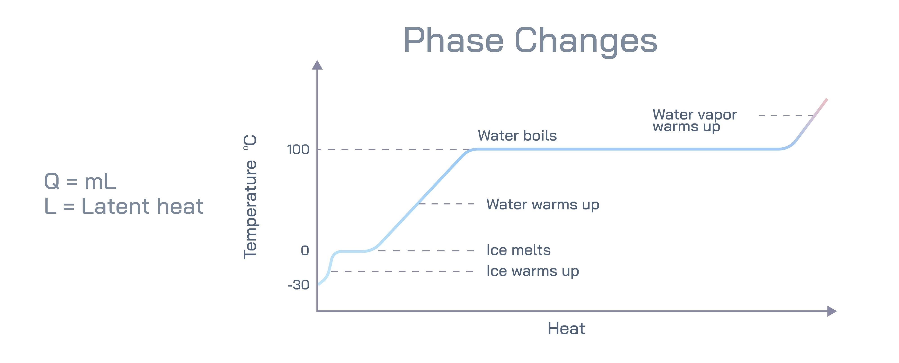

Understanding the Science of Latent Heat
In meteorolgy, latent heat is essentially "hidden" energy. It is the energy absorbed or released by water as it changes states (between solid, liquid, and gas) without changing its actual temperature.
While you can't feel this heat with a thermometer while the phase change is happening, it is the primary fuel source for the world's most powerful storms.

Latent heat phase changes.
The Energy Exchange
To understand how this works in the atmosphere, think of water molecules as being held together by "bonds." Moving between states requires either breaking those bonds or forming them:
- Evaporation (Energy Storage): When liquid water turns into water vapor (gas), it absorbs energy from its surroundings. This is why you feel cold when you step out of a pool (the water is "stealing" heat from your skin to evaporate.) This energy is now "latent" (stored) in the water vapor.
- Condensation (Energy Release): This is the crucial part for weather. When that water vapor rises, cools, and turns back into liquid droplets (forming clouds), it releases all of that stored heat back into the surrounding air.
Fueling Severe Weather
Latent heat acts like high-octane gasoline for thunderstorms and tornadoes. Here is the chain reaction:
- Rising Air Warm, moist air rises.
- Cloud Formation: As it reaches higher, cooler altitudes, the water vapor condenses into clouds.
- The "Heat Kick": As it condenses, it releases massive amounts of latent heat. This warms the surrounding air in the updraft.
- Feedback: Because the warm air is more buoyant than cold air, this extra heat makes the air rise even faster and more violently.
This process creates a "heat engine." The more moisture there is in the air, the more latent heat is released, and the more powerful the updrafts of a thunderstorm becomes.
Latent Heat and the Hurricane Engine
In tropical systems like hurricanes, latent heat is the sole power source. The storm pulls warm, moist air from the ocean surface. As that air rises and condenses near the eye wall, the release of latent heat creates a drop in surface pressure, which sucks in more air, creating a cycle that can sustain a massive storm for days.